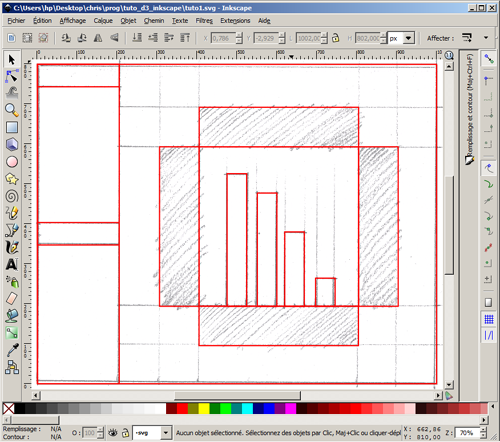
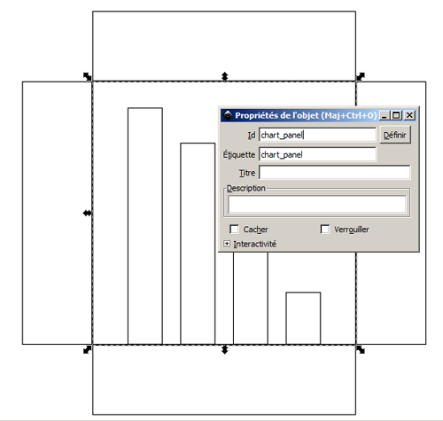
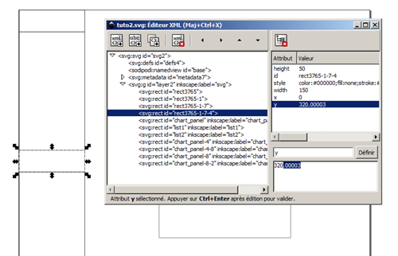
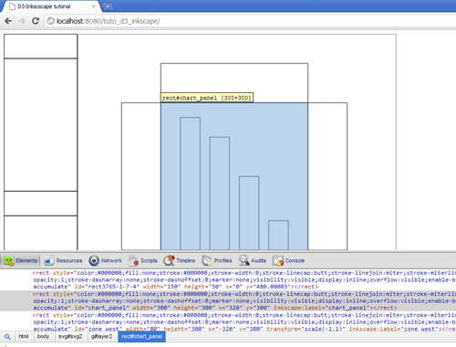
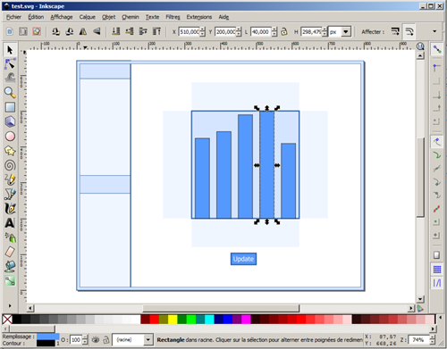

A UI designer often begin by sketching an idea, drawing a wireframe or a mockup and then implementing a functional prototype to test the interaction. Here is a typical workflow using Inkscape for illustration and d3.js to program animations and interactions on top of it. This is not a d3 nor Inkscape tutorial, but only a quick demonstration of how to integrate both tools in a complete design workflow.
I prefer to draw a wireframe on my sketchboard and then scan and import it in Inkscape. I then redraw the outline mostly with boxes. Here I used red lines to contrast with my drawing. 
The next step is to set some meaningful ID's on the elements I will want to use in d3: right-click on the element > Object properties > enter an ID > click on the Set button (the Définir button in this screenshot). 
I enter values in number boxes to have precise positioning. But you will have to check Inkscape preferences > Tools > Bounding box to use, because if you don't the pixel width will interfere with your positioning. A better way to do it is to enter values directly in the XML editor: Edit > XML editor. 
As with any WYSIWYG, it can be a little tricky to have Inkscape write the exact SVG markup you want. Here are some little tricks:
The SVG file can now be loaded in d3. Don't forget to develop with a local web server or other mean of having your browser accept the security restriction on file loading.
Here is a live example. Click on the "Update button" to see the bars changing heights.
Here is the source code that loads the file, retrieves some elements with meaningful ID's, and adds interaction (like the "Update" label converted to a button) and animation (like the updating bar chart). There is also a basic (and ugly) code I use for my own needs, generating a download link to export the SVG results. Be sure to right click the download link to Save as and to enter a filename with the SVG extension.
I can go back to Inkscape at any time by exporting the generated SVG with the Download link and continue to iterate on the design.
 That's all. You will excuse my unelegant code, but I wanted to keep this to the bare minimum and getting this tutorial quickly out of the door, hoping it can inspire you to combine those two great tools. If you need help, not about SVG or Inkscape but about d3.js, you can find me and a lot of great developers on the very dynamic d3.js Google group.